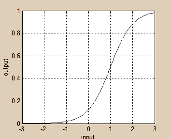

The bipolar cells compute the rectified difference between the photoreceptor and horizontal cell outputs.
Rectification manifests itself in two types of bipolar cells, on and off type. The on type responds when the photoreceptor sees a stimulus brighter than the surround, while the off type responds when the stimulus to the photoreceptor is darker than the surround. The resting output of bipolar cells is low--most of the output dynamic range is used to represent only a particular sign of contrast, either on-ness or off-ness.
On-Center RF

Off-Center
RF
We modeled this computation as the simple sigmoidal
function shown below that applied to the difference between a particular photoreceptor and the single horizontal cell. The sigmoid is shifted
so that the output for zero differential input is near zero. In reality, this
computation probably occurs in the triad synapse formed by the photoreceptor,
horizontal cell, and bipolar cell.

Transfer
function of bipolar cell